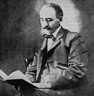

Intro
Put your family history in your hands, uncovering your roots, discovering the threads of your ancestry, linking the past to the present.
Its your ancestry and our expertise helping you preserve memories, one ancestor at a time.
Let us help you uncover the history of your family tree mapping your heritage, helping build bridges to your past shaping your future.
Journey through time with Sanford Genealogy Services, revealing the past, enriching the present.
Family histories, expertly uncovered.
Sanford Genealogy Services where ancestral connections are made easy, tracing lineages, building legacies, connecting generations, one search at a time..
Our Work
Here at Sanford Genealogy Services we are professionals who research family histories and lineage. Our work involves various tasks aimed at uncovering, documenting, preserving & presenting ancestry and family connections of individuals or families. Here are some key aspects of our work:
1. Research and Data Collection
Archival Research: We spend significant time in libraries, archives, and online databases to collect records such as birth, marriage, death certificates, census records, immigration documents, military records, and more.
Oral Histories: We may conduct interviews with family members to gather stories, traditions, and personal recollections that can provide context and fill gaps in written records.
Historical Context: We know that understanding the historical, social, and cultural contexts of the times and places where ancestors lived is crucial as it helps in interpreting records accurately and understanding the conditions that affected their lives.
2. Analysis and Documentation
Record Analysis: Here at Sanford Genealogy Services we analyze documents to extract relevant information and establish connections between individuals. This involves verifying the authenticity and reliability of sources.
Building Family Trees: We create detailed family trees or pedigree charts that visually represent familial relationships and lineages.
Documentation and Citations: We provide proper documentation and citation of sources are essential to maintain the credibility and accuracy of our genealogical work.
3. Problem-Solving and Validation
Brick Walls: We often encounter challenges or "brick walls" where records are scarce or non-existent. We use various ranges of problem-solving skills and alternative research strategies to overcome these obstacles.
Validation: We here at Sanford Genealogy Services are committed and know the importance to ensuring the accuracy of presenting genealogical information. We always cross-reference multiple sources and use third-party DNA testing where applicable to validate our findings.
4. Technology and Tools
Software: We use specialized software to organize and manage data, create charts, and share information.
Online Databases: Websites like Ancestry.com, FamilySearch.org, and others provide access to vast collections of records and resources.
DNA Testing: Genetics is an increasingly important tool. We interpret DNA test results to find biological relatives and trace ancestral origins.
5. Education and Training
Continuous Learning: Here at Sanford Genealogy Services we must stay updated on new research methodologies, technologies, and available resources. We pursue formal education and certifications.
Workshops and Conferences: We attend conferences, workshops, and seminars that helps us network with other professionals and learn about the latest developments in the field.
6. Client Services
Custom Research: Many of us work as consultants, offering custom research services to clients who want to learn more about their family history.
Reporting: We prepare detailed reports and narratives for clients, often including charts, family histories, and other documentation.
Education and Guidance: We may also teach classes, lead workshops, or provide guidance to individuals conducting their own research in the near future.
7. Ethical Considerations
Privacy: Ultimately we here at Sanford Genealogy Services are respecting of the privacy of living individuals and our handling of these sensitive information we present and know this to be paramount.
Cultural Sensitivity: We always approach each case with an awareness of and respect for cultural differences and traditions of its times.
Overall, the work we do here is very meticulous, involving a combination of research skills, historical knowledge, analytical thinking, problem solving, and a passion for uncovering and preserving family histories.
About Us
Carlton Elisha Sanford (1847 - 1915)
Lawyer, banker, business leader & genealogist.
Author of the volumes "Thomas Sanford, the Emigrant to New England; Ancestry, Life, and Descendants, 1632-4" The first known genealogist of the family.

Welcome to Sanford Genealogy Services where your family's history comes to life. We are dedicated to helping you discover, preserve, and celebrate your unique heritage through professional genealogy services.
Our Mission
At Sanford Genealogy Services our mission is to connect you with your past, providing detailed and accurate family histories that foster a deeper understanding of your roots. We believe that knowing where you come from is essential to understanding who you are.
Our Services
We offer a comprehensive range of genealogy services tailored to meet your specific needs, including:
Family Tree Research: Our experts meticulously trace your lineage, uncovering ancestors and their stories.
Historical Records Search: We access and analyze historical documents, including birth, marriage, and death records, to provide a complete picture of your ancestry.
DNA Analysis: By interpreting third-party cutting-edge DNA test results, we help you discover genetic connections and ancestral origins.
Custom Family Histories: We compile your family’s history into beautifully crafted narratives, complete with photos and documents.
Grave/Memorial Site Decoration & Cleaning: From placing decorations, removing debris to winterizing & inspecting of its conditions, we are sure to meet your needs.
Memorial/Cremation Plaques: Using state of the art laser engraving systems we can help design or capture your moments into physical pieces.
Our Expertise
Our team consists of seasoned genealogists, historians, and researchers with a passion for uncovering the past. With years of experience and access to extensive global databases and archives, we ensure thorough and accurate research results. We handle every project with the utmost care, confidentiality, and respect.
"Why Choose Us?"
Personalized Service: Every family is unique, and so is our approach. We tailor our services to fit your specific needs and interests.
Expert Research: Our skilled genealogists use proven research methods to ensure the accuracy and authenticity of our findings.
Global Reach: We have access to international records and resources, allowing us to trace your ancestry across borders and continents.
Commitment to Quality: We are dedicated to delivering high-quality, detailed, and meaningful genealogical reports and stories.
GET STARTED
Be your familys' historian.
Begin your journey into the past with Sanford Genealogy Services. Whether you're looking to build a family tree, uncover ancestral stories, or explore your genetic heritage, we're here to guide you every step of the way.
Contact us today to discover your family's history and create a legacy for future generations.